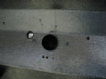
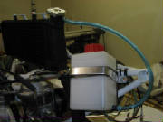
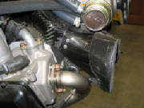

|
December 11, 2007 1.8 hours - Drill firewall
for engine mount
After an email exchange with Leon at Pipistrel, I used my dial
caliper and his reference of 42 mm up from the bottom surface of the fuselage to mark the bottom hole for the engine mount
at the center of the lower firewall hard point. I drilled an 8 mm hole there, inserted an 8 mm bolt through the engine
mount and held the mount against the firewall with the lower bolt in place.
I marked the firewall material around the lower engine mounting
point, then removed the mount and cut the material away so that the mount will bear directly on the firewall. Then I
placed the engine mount in position with the lower bolt in place, drilled each of the remaining mounting bolt holes, and inserted
a bolt in each one after it was drilled. My long 8 mm drill bit, which I had purchased previously, was necessary to
drill the upper mounting holes, because they are located close to the fuselage sides that extend forward of the firewall.
Starting with the lower bolt centered resulted in
the engine mount rotated toward the right side of the aircraft one degree when I checked the mount alignment against the wing
mounting tubes in the cockpit. I decided that the one degree difference is OK.
Note that at this point the
lower mounting bolt is inserted from the front of the mount, not the rear of the firewall. That makes it easier to remove
and replace the mount while drilling the holes initially. Next I will remove the mount and reinsert the bolt from the
aft side of the firewall, with epoxy and cotton flock to hold the bolt in place while mounting the engine.
December 12, 2007 1.1 hours - Attach engine mount to engine
I marked around the engine mounts onto the firewall material,
then removed the mount from the firewall. Then I cut away the fire barrier material at the mounting points. I then attached the engine mount to the engine with the rubber shock mounts,
tightening the nuts onto the bolts until they bottomed out onto the mount bushings and using blue Loctite 243 on the nuts.
December 13, 2007 2.5 hours - Firewall penetrations
I unpacked, inventoried and studied the firewall-mounted components
and fittings. After getting a general idea of where things belong, I used the firewall sketches from Pipistrel and double
checked them against the components to be mounted, then started drilling holes.
First, I drilled the holes for the oil tank bracket. The measurements from Pipistrel indicate that the bracket
is rotated a few degrees from vertical, clockwise as viewed from the cockpit, so that's how I drilled the holes, checking
them against the bracket for proper fit. It appears that the oil tank bracket will be mounted with four M5 x 16 hex
bolts.
Then I measured the hole locations
for the electrical panel. I drilled the two lower holes first, then held the electrical panel in place with two
bolts in those holes and checked the position of the upper holes. I found that the hole locations in the panel matched
the lateral dimensions in the Pipistrel sketch, but both were about 1 cm higher on the firewall. So, I match-drilled
those holes using the electrical panel as the drill guide.
I also concluded that the lower left electrical panel mounting cap screw is intended to protrude through the firewall
and used to mount a hose clamp for the fuel return line. Therefore, the cap screw for that location is longer (M5 x
24) than the other three mounting screws (M5 x 16).
December 14, 2007 4.5 hours - Install cabin heat
duct
I laid out the holes for the heat duct and deflector, which
penetrates the firewall through the center of the electrical panel. The heater is simply a hole in the firewall which
passes hot air coming through the radiator, with a pilot-operated stopper covering the cockpit side of the hole. I checked
the hole positions against the electrical panel and the heat deflector mounting bracket and confirmed that they were in the
right position. I did this by drilling a 1/16" hole through the center of the heat duct opening, then mounting
the electrical panel temporarily to ensure that the hole would be centered in the panel opening and that the heat deflector
would be properly positioned in the hole.
I then
drilled the two deflector mounting holes and the hole for the heat duct. A 2 1/8" hole saw would have been about
right for the heat duct, but I had left my hole saws at my new house construction site, so I drilled out most of the opening
with a 7/8" hole saw that I had on hand, then finished the perimeter to match the carbon heat duct using my rotary grinding
tool.
I
mounted the heat duct, deflector and electrical panel again temporarily to confirm that everything fits OK. Then I drilled
the remainder of the holes at the positions provided by Pipistrel.

There are two large holes, one 30 mm diameter and one 24 mm diameter, which are for electrical wire bundles
that pass through plastic fittings inserted into the openings. The positions of these openings match corresponding holes
in the electrical panel. I did not confirm the position of these openings before drilling them, but fortunately they
matched the electrical panel holes very well. I used a 7/8" hole saw for the smaller hole, which is about 22 mm,
but which matched the plastic fitting very well. I used the same hole saw for the larger opening, enlarging the hole
with my rotary tool until it matched the larger fitting.
Between these two holes is a 10 mm hole for the propeller control cable housing. It also matches a hole in
the electrical panel.
December 15, 2007 3.0 hours - Install insulation blanket and carpet on firewall and front cockpit
I masked the forward cockpit around the firewall in preparation for installing the insulation blanket
and carpeting on the aft side of the firewall, and carpet on the fuselage sides on either side of the firewall.
I sprayed contact adhesive on the firewall, fuselage sides and the portion of the fuselage
above the firewall. I also sprayed contact adhesive on the firewall insulation blanket. After allowing the adhesive
to become dry to the touch, I applied the insulation blanket to the firewall. Then I sprayed the carpet pieces for the
sides of the fuselage on either side of the firewall and the carpet strip that goes on the bottoms side of the fuselage overhang
above the firewall. I installed the side carpet pieces first, then the one above the firewall.
Finally, I sprayed the aft side of the insulation blanket and the back side of the firewall carpet with
adhesive. After letting it dry, I pushed the carpet into place. It didn't adhere very well in places, but
I figure it will be secured by the electrical panel and the other equipment that gets bolted through the carpet.
December 15, 2007 0.7 hours - Epoxy lower engine mount bolt in firewall
I had asked Leon at the factory how the washers are to be used on the engine mount bolts. He explained
that a lock washer and a large washer go under the head of the bolt behind the firewall, then two washers under the nut when
attaching the engine mount.
In preparation for the next step I heated my garage for a few hours to get everything up to 75 degrees
F for curing the epoxy that will hold the lower engine mount bolt in place.
Then
I rigged up a way to get the lower engine mount bolt through the firewall from the back side, using the fuel hose opening
in the bottom of the firewall for access. I had some brass tubing on hand, which I flattened and bent into a suitable
shape, then temporarily taped the bolt head to the end.
I placed a lock washer
and a large washer on the bolt, then applied a mix of epoxy a cotton flock to the washers and under the head of the bolt.
I greased the threads of the bolt to ensure that the epoxy does not stick to them.
The
epoxy is mixed 100:38 by weight, resin to hardener -- I use and electronic scale for this. Be sure to mix the epoxy
thoroughly before adding the cotton flock.
I maneuvered the bolt and washers through
the fuel hose opening and into the hole in the firewall. Then I stacked some washers on the bolt and pulled it tightly
in place to hold it under tension until the epoxy cures.
I also applied
a small amount of the epoxy mix around the carbon heat duct to keep it from working loose.

Dave Adams, another Pipistrel builder, used a different method for getting the lower engine mount bolt into
position. He had a flat chain saw wrench on hand which he bent 90 degrees. He riveted a retaining strip to the
wrench and used it to get the bolt and washers into position.
December 15, 2007 1.5 hours - Install cabin
heat duct and electrical through-fittings
Then I used my soldering iron to cut through both the insulation blanket and the carpet at the large
hole where the heat duct goes. I pushed the carbon heat duct in place with the flange on top of the carpet.
I opened holes in the insulation blanket and carpet at the remaining holes, using my soldering iron to melt through
the material.
Then I mounted the heat diverter using two M5x16 socket head cap screws and large washers. On
the front side of the firewall I inserted blind mounting nuts, which seat flush with the surface, extend into the hole and
have three teeth to bite into the material to keep them from turning. I used blue Loctite 243 on the bolts.

Next I installed the through-firewall plastic threaded
wire bundle fittings. They were not long enough to extend beyond the carpet, so I remove enough carpet material around
the hole to permit installation of the nut on the end of the fitting on the back side of the firewall.
December 15, 2007 0.9 hours - Install oil tank bracket
and electrical panel
I determined that the bolts for the oil tank bracket are not long
enough to penetrate the carpet, insulation and firewall to engage the threads in the oil tank bracket, so I remove some carpet
and insulation around the four mounting holes so that the washers under the bolt heads will rest directly on the aft side
of the firewall. Then I fastened the oil tank bracket in position, using M5x16 hex head bolts, with large washers under
the bolt heads. I used blue Loctite 243 on the threads.
Finally, I mounted the electrical panel to the aft side of
the firewall, using blind mounting nuts on the front of the firewall. I used M5x16 socket head screws on three of the
mounting points, and an M5x24 screw in the lower left mounting point. This screw extends through the front side of the
firewall, and will be used later to install a hose clamp to hold the fuel return line.
Some of these installations are out of the sequence shown in the kit manual,
but I believe it will be easier if I complete as much of the work as possible on both sides of the firewall before I hang
the engine, rather than try to work around the engine after it is installed.
December 20, 2007 1.8 hours - Route wiring
and install radiator overflow bottle
I studied the kit photos and determined how the various engine sensor
and electrical wires are routed, then tied them to the engine mount in what I believe to be the correct routing. This
is in preparation for hanging the engine on the firewall, at which point the wires will pass through the firewall to the electrical
panel and instrument panel.
I mounted the radiator overflow bottle on the upper left engine
mount tube, using two hose clamps, M5 x 16 cap screws and washers. These 16 mm hose clamps have been modified to include
nutserts for securing them to the engine mount.
December 22, 2007 1.9 hours - Fuel supply and
return lines; fuel fill valve
I studied the photos and the kit manual to clarify how the fuel supply and return lines are to be completed
on the front side of the firewall.
First, I located the short fuel lines and attached
T-fitting that connect the ground fueling valve into the supply line. I cut lengths of fire sleeve for this assembly. I determined where the ground fueling valve will be attached to the fuselage flange around the firewall. This
is mid-way between the left rudder cable fittings. This gave me a reference for the length of the fuel supply line that
emerges from the lower center of the firewall, and I cut that line to its final length. Then I cut a length of fire
sleeve to cover the supply line from the T-fitting to approximately 2 cm behind the front surface of the firewall.
I slid the remaining fire sleeve over the fuel return line until it penetrated the firewall opening, then secured
it with a 20 mm hose clamp, a washer and an M5 nylon lock nut onto the end of the bolt that secures the lower left mounting
point of the electrical panel. I used Loctite 243 on the nut. Then I tied the supply and return lines together
with a cable tie.
Then I drilled a hole for the ground fueling valve in the fuselage lip at the location shown in the kit
photographs. I used my rotary tool to grind away the step in the firewall-to-fuselage flange to create a level surface
on which to mount the valve, and to reduce the material thickness enough to permit the valve to be assembled through the flange.
I screwed the fuel hose fitting into the top of the valve, applying Loctite 542 to the threads. Then
I inserted the lower fuel hose fitting through a washer, inserted the fitting through the fuselage flange and screwed it into
the valve, also using Loctite 542 on the threads. I will let the Loctite harden before attaching the fuel supply hose
to the valve.
December 23, 2007 2.5 hours - Install gascolator,
fuel flow sensor and radiator
I mounted the gascolator on the bracket that is attached to the lower left engine mount attach point.
This is accomplished using two 1 cm spacers (Pipistrel part 1033003), two M6 x 30 hex bolts, two 6 mm flat washers, two 6
mm lock washers and two plain nuts. In addition to the lock washers, I put blue Loctite 243 on the nuts. I then cut a length of fuel hose and fire sleeve from the end of the fuel supply line and attached the fuel flow
sensor to the outlet of the gascolator, using cable ties at the fittings. I routed the
fuel flow sensor wire down the engine mount and followed the other wires to the point where it will go through the firewall,
securing the wires to the engine mount tubes with cable ties. The kit manual shows a length of fire sleeve split and
wrapped around the fuel slow sensor, secured with cable ties; however, I plan to protect it with Aircraft Spruce Heat Proof Tape part number 09-31500. This is on order from Aircraft Spruce, so I will install it when it arrives.
I connected the large radiator hose to the water pump using a 25-40
mm hose clamp.
I mounted the radiator between the supports on the top of the engine mount, using four M6 x 16 hex bolts and
6 mm flat washers. I used Loctite 243 on the bolts.
I connected the long radiator hose to the upper radiator fitting adjacent to the filler cap, using a 25-40
mm hose clamp.
Then I used the shorter length of radiator hose to connect the water manifold to the other radiator fitting,
also using 25-40 mm hose clamps.
Finally, I connected the blue plastic tubing from the radiator overflow bottle to the overflow fitting on the
radiator. I used my heat gun to soften the tubing slightly, then worked it over the fitting and secured it with a cable
tie.

January 5, 2008 0.6 hours - Wrap fuel flow sensor with heat tape
The heat proof tape arrived from Aircraft Spruce. I cut a length of the tape and wrapped it around
the fuel flow sensor and secured it by wrapping it with safety wire (the tape has no adhesive backing).
May 30th-31st, 2010 12.0 hours - Mount engine,
connect fuel lines, oil lines, throttle & choke cables
I installed the fuel flow sensor in the fuel line between
the fuel pump and the fuel splitter. See the Rotax Engine Modifications page for details on my decision to switch from the Brauniger sensor to the Electronics International sensor from Dynon.
I then mounted the engine on the firewall, torquing the M8 bolts
to 25 NM (221 in-lb) and the M6 bolts to 11 NM (97 in-lb).
I connected the fuel lines to the ground fueling valve
and the gascolator input fitting. I then cut a new length of fuel line, slid heat protecting sleeve over it, and installed
it between the gascolator and the fuel pump. I then connected the fuel return line to the fourth leg of the fuel splitter.
I routed the wiring from the engine through the firewall fittings
and finished securing it with tie-wraps.
I soldered the throttle and choke cables into the barrel fittings and cut off the excess cable. I then installed
the barrels into the linkage fittings in the control assembly.
|
| Ground wire bolted to manifold |
I soldered an AMP #8 AWG ring terminal to the end of the large brown ground wire and bolted the ring terminal to
the intake manifold at the right carburetor, as instructed by Leon at Pipistrel.
I mounted the oil tank on the firewall, attached the two 90-degree elbow fittings to the inlet and outlet fittings,
then cut the oil lines to length and attached them to the fittings, secured with hose clamps. I attached the oil vent
line, routed it behind the fuel tank and shown in the construction manual, securing it with tie-wraps.
Finally, I lock-wired the oil tank drain bolt at the bottom of the oil tank.

June 6, 2010 1.0 hours - Assemble top and bottom
cowling temporarily
I aligned the cowling seams, taped them together, drilled small holes at the molded indentations, and used small screws to
hold them together temporarily.
June 11, 2010 2.3 hours - Install quick release
fittings in cowling
Following the instructions in the kit manual, I disassembled
the cowling and enlarged the holes in the top cowling to 1/4" using a step drill. A step drill, also called a uni-bit,
is absolutely the right way to drill holes in thin, flexible material. The flutes of a twist drill will catch on the
edges of the hole, wander off center, cause cracks and scratches in the material, and generally make a mess of things.
The 1/4" size is just right for a nice fit to the quick release fitting, not sloppy but allowing the fitting to slide
in and out when mounting and removing the cowling.
I then installed the quick release fittings in the eight 1/4" holes in the bottom rim of the top cowling.
These fittings are secured with small split washers over the center pin of the fitting. The way to install the washer
is to slip it over the end of the center pin, slide one end of the washer under the cross pin, then rotate the washer to screw
the washer behind the cross pin.
|
| Place the washer over the center pin |
|
| Slide one leg under the cross pin, then continue rotating the washer until it is under the pin |
|
| These fittings must slide in and out for removing and mounting the top cowling |
I enlarged the holes in the bottom cowling to 15/32" with my
step drill, chamfered the edges of the holes with a dremel grinding tool and installed the quick release sockets. Then
I fastened the top and bottom cowlings together to confirm proper fit.
June 12, 2010 5.5 hours - Mount cowling on
fuselage
I taped the cowling to the fuselage, attached the spinner to the backplate and slipped the spinner onto the
propeller flange. Then I adjusted the cowling for the best alignment with the spinner and marked the aft edge of the
spinner for trimming to fit the recess in the forward fuselage skin.

To mark the cowling, I first attached a strip of 1/2" tape to
the fuselage that I carefully aligned with the edge of the fuselage lip. Then I taped the cowling in place, checked
its alignment and marked the trim line of the cowling by measure forward from the edge of the reference tape.
I trimmed the aft edge of the cowling to my reference marks, down
to the point where the lower cowling no longer touches the fuselage. From that point I faired the edge back to the original
aft edge of the cowling. Then I measured the aft cowling
fastener points as instructed by the kit manual, drilling number 40 holes and installing 1/8" clecos.
I then removed the cowling, separated the top and bottom halves and
enlarged the holes in the aft edge of the top cowling to 1/4". The quick release fasteners in these holes
are held in place with star washers that have to be driven onto the fastener. I made tools for this step from some scrap
hardwood.
June 19, 2010 8.0 hours - Mount cowling
I finished installation of the quick release fasteners in the aft
edge of the top cowling. I enlarged the holes in the fuselage forward lip to 15/32" inch with my step drill and
installed quick release sockets. Then I mounted the top cowling and checked its fit to the fuselage. Then I assembled
the top and bottom cowling, mounted the assembled cowling onto the fuselage using the top cowling quick release fasteners
and enlarged the holes in the aft edge of the lower cowling and fuselage to 4 mm using a metric step drill. The bottom
cowling is attached to the fuselage with 4 mm truss hex head socket screws.
Then I used a dremel tool as instructed by the kit manual to grind recesses on the inside of the fuselage skin
at the lower cowling fastener points and installed nutsert inserts at those four mounting points (two on each side of the
cowling).
I reached inside the cowling and marked points for the exhaust,
fuel quick drain and fuel fill points as instructed by the kit manual. I then used hole saws to drill the initial holes.
For the exhaust opening, I started with a 1 3/4" hole saw, then gradually opened it up around the exhaust pipe by mounting
the cowling, marking points of obstruction, removing it and grinding away material with my dremel tool, and continuing in
this manner until I had an opening with 10 mm clearance around the edges of the exhaust pipe. The final exhaust opening
is about 2 1/4" wide and 4 1/2" long.
With the exhaust pipe mounted in its permanent position, I installed the retaining spring and added safety
wire.
At this point I have not yet sealed the edges of the exposed fiberglass
insulation. I will be using high temperature RTV silicone sealant for that.
The kit manual was a bit vague on installation of the lower cowling brackets, but I found some good
reference photos that I took of another Sinus. This step requires installing and removing the lower cowling several
times. I started with the center lower bracket (the longest one) and mounted it to the center
of the lower fuselage forward lip using a 5x16 mm hex bolt, nut and washer. I then pushed the cowling against that bracket
and marked the cowling where it contacted the bracket. I then drilled a 4 mm hole and inserted a truss head hex socket
screw to hold the cowling in place. Next I installed the small outer brackets. For
each one, I first found the point where it best matched the cowling and fuselage contours and mounted the bracket to the fuselage
lip. Then I marked the point where the bracket contacts the cowling and drilled a 4 mm hole in the cowling. I
then installed a nutsert in the lower arm of the bracket and installed a 4 mm truss head screw. Finally,
I mounted the two remaining brackets at the mid point between the center and outer brackets.
June 25th-26th, 2010 5.5 hours - Mount cowling
continued
As instructed by the kit manual, I mixed epoxy and cotton flox, then spread it around the top center
quick connect socket where there isn't room to install a washer and nut. I bought some Permatex
black high temperature (260 degrees C) RTV silicone at an auto supply store and used it to seal the exposed fiberglass insulation
fibers around the openings cut in the bottom cowling. It is difficult to trim raw fiberglass edges cleanly, so the edges
are rough at this stage, but the edges can be trimmed more easily after the RTV has cured. I slipped
the air scoop onto the front extension of the engine cooling shroud and in a series of cut-and-try operations achieved a fit
between the air scoop and the opening in the bottom cowling, leaving a gap of about 3/8" between the scoop and the cowling.
This gap will be sealed by the stick-on foam strip supplied with the kit. I did not have to cut
the hole in the scoop to clear the exhaust pipe that is described in the kit manual. Perhaps the titanium exhaust system
that I bought with my kit is slightly different geometry than the standard steel exhaust. After
RTV silicone around the cowling holes cured, I was able to trim the rough edges with a razor blade. This
cleaned up most of the excess fiberglass strands, but also exposed additional strands, so an additional application of RTV was
required to seal the edges. I checked the fit of the air scoop extension to the cowling one more
time, then cut the fuel pump cooling vents as described in the kit manual.
I attached the scoop extension to the engine shroud with three rivets.
The kit manual shows two rivets on the side away from the engine, but doesn't show where the third rivet should go.
Since it seemed best to put the third rivet on the other side of the opening, I found that with my angle drill I could drill
a 4 mm hole from inside the scoop, and there was just enough room to reach in from the front opening with the rivet squeezer
to install the third rivet.

Then I added the adhesive-backed foam strip around the edge of the air scoop to seal the gap between the
scoop and the cowling. . . . . . .
I used RTV silicone to bond the baffle around the outer edge of the oil cooler, and added another coat
of RTV around the holes in the lower cowling to seal the exposed fiberglass insulation that was exposed by trimming the edges
of the first silicone application.
June 27th, 2010 0.8 hours - Complete baffle foam
seals
I fit the foam seal around the oil cooler, then spread RTV silicone on all the exposed foam edges. I also spread RTV
over the exposed adhesive surfaces so that the foam won't stick to the cowling.
I also did one final trim and RTV
seal of the holes in the lower cowling.

July 5th, 2010 0.6 hours - Splice wires to fuel
flow sensor
I removed the PIDG connectors on the fuel flow sensor leads and spliced them to 22 gauge tefzel wire that I then fed
through the firewall wire conduit.
August 8th, 2010 1.2 hours - Install propeller and spinner
I connected the pitch control rod to the propeller pitch change shaft, using the short threaded pin, secured with Loctite
243.
The propeller, spacer, spinner backplate and spinner are all marked for alignment by the Pipistrel factor. The whole
assembly has been balanced, with the final balance established by a small bolt through the spinner backplate.
To
install the propeller, I started by using the propeller attach bolts for alignment and slid the spinner backplate and propeller
spacer over the propeller hub.
|
| bolt through backplate is for propeller balance |
I then bolted put two bolts through the propeller and slipped the bolts through the spacer, back plate and hub. I had
rotated the propeller pitch change rod so that the end would align with the propeller control lever behind the shaft, and
oriented with the threaded leg of the rod down.
With the propeller in place I inserted the other two bolts, then
tightened the bolts to 25 nm as instructed by the factory.
Then I put the short bolt through the propeller pitch
control shaft and the control lever, securing with Loctite 243.
The pitch control return spring is too long, so
I cut it to a length that pulled it to the full forward position.
Then I mounted the spinner to the back plate. The spinner is keyed by a small notch on the edge that matches a notch
in the back plate.
August 12, 2010 1.1 hours - Install water temperature
sensor, improve baffle seals
I received the water temperature sensor that I ordered from Pipistrel. The manufacturer is Facet, located in Italy.
The box is marked "SENZOR TEMP 7 3073 FACET GOLF 1.6D". A label is marked 190444 and 7.3073
On the front of the box is a label with bar code 5062033100000978 Under that is "SENZOR ZA VODE 120 C"
Under that is "5062033 SN 100000978"
The sensor itself is marked 07K and 3073.
I also received
some more adhesive foam to replace some that had disintegrated in my kit. I used that to extend the foam seal around
the oil cooler baffle.
I installed the water temperature sensor in the water pipe riser between the engine and
the radiator, in place of the plug supplied with the kit. I secured the sensor with Loctite 243. Because the water
manifold is not grounded to the engine, I need to devise a way to get a good ground wire connection to the base of the sensor
plug, or to the manifold.
|
| Sensor has threads to match the water manifold fitting |
|
| Water temp sensor installed |
August 13, 2010 2.5 hours - Extend air scoop seal, enlarge
cowl openings
I installed the cowling to check the fit around the oil cooler baffle foam. I decided that the foam around the top edge
of the engine air scoop needed to extend further, so I replaced that section of the foam so that it would better seal the
opening. Then I sealed all the exposed foam edges with RTV silicone and reinstalled the propeller.
I then used my dremel tool to open up the cooling scoops in the lower cowling so that the edge is closer to the outside of
the recesses molded into the cowling.
November 14th, 2010 1.8 hours - Oil thermostat installation
Began oil thermostat installation. I purchased a remote oil thermostat from California Power Systems, item number
13521. Using the instructions, some photos from Jonas Boll and the kit manual, I determined the new routing for the
oil lines between the oil pump, oil cooler, oil reservoir and the thermostat.
First, I installed the brass
oil fittings into the four ports of the oil cooler, using Loctite 243 and torquing them to 28 foot pounds, as specified in
the thermostat installation instructions.
I removed the propeller and the oil cooler, so that I could reposition
the oil fitting at the top of the oil cooler.
December 4th, 2010 1.5 hours - Oil thermostat installation
Following the oil thermostat photos from Pipistrel and Jonas Boll, I replaced the oil pump inlet fitting with an oil cooler
elbow fitting, Rotax part number 956 585. Installation of the elbow required removal of the oil pressure sensor, removing
the original inlet fitting, installing the elbow, then re-installing the pressure sensor.
I also had to remove
the oil cooler to reposition the top hose fitting, which required that I remove the propeller and spinner.
December 5th, 2010 3.3 hours - Oil thermostat installation
I completed the hose routing, after initially having difficulty getting the hoses over the fittings on the thermostat.
I finally decided to try heating the ends of the hoses with a heat gun first, which solved the problem. I copied the
factory position for the thermostat, securing it to the intake manifold with tie wraps, using short lengths of cooler hose
for stand-offs. After determining the hose lengths and the proper position for the thermostat and oil tank, I installed
everything temporarily to ensure that there is adequate clearance for the cowling.
I used 13 mm oil line
ordered from California Power Systems, item 181411 to add the lines to the oil thermostat.
I am waiting for delivery
of some fire sleeve for the hoses that pass near the exhaust pipes, so I will complete the installation after the fire sleeve
arrives.
December 18th, 2010 3.5 hours - Oil thermostat installation
I received the Aeroquip AE102-14 firesleeve, ordered from Tex-Air Parts, after being unsuccessful in locating a source for
the proper size of Stratoflex fire sleeve. The two products appear to be equivalent in materials and thermal protection,
and both products are offered by various aircraft parts suppliers.
I cut lengths of firesleeve for the oil lines
that run near the exhaust pipes, slipped them over the oil lines to the oil tank and the oil thermostat, then connected all
the lines and tightened the hose clamps on the ends of the hoses.
Then I reinstalled the propeller and spinner,
torqued the bolts and reconnected the propeller pitch control arm to the propeller pitch control shaft.
December 18th, 2010 1.0 hours - Oil pressure regulator
update
Rotax has updated the oil pressure regulator since my engine was manufactured. I installed the new parts (841-983 plug
screw, 838-122 compression spring, 857-230 oil pressure control cone). The cone replaces the ball in the original regulator.
The new regulator is reported to improve the pressure regulation action for more consistent oil pressure, and raises the oil
pressure slightly.
I removed the original parts and installed the new ones, torquing the plug to 15 Nm. Then
I safety-wired the plug.
|
| Old regulator parts removed |
January 2nd, 2011 3.0 hours - Purge oil system
I had filled the oil tank with Aeroshell Oilsport Plus 4 oil two weeks ago and ran through the oil purge procedure described
in Rotax Service Instruction SI-912-018 & SI-914-020. I used VDO oil pressure calibration data and measured the
resistance of the oil pressure sender during the procedure to confirm that I was getting oil pressure in the 40-50 psi range.
This satisfied the criteria described in the procedure.
I had asked California Power Systems about purging the
oil circuit with an oil thermostat installed. They said that the thermostat will always pass some oil through the cooler,
even when the oil is cold, so nothing special would have to be done, other than to keep turning the propeller until the oil
cooler is filled with oil.
So, I disconnected the oil return line at the oil tank, capped the tank opening, hooked
up my air compressor, removed the top spark plugs and tried the purge. I wasn't able to achieve the specified 10-15
psi of pressure due to the rate of leakage at the oil tank cap, but the oil seemed to be getting through the system, because
I was getting good oil pressure and there was oil coming out of the return line from the engine.
I wasn't
sure the oil cooler was getting oil, so I disconnected the oil line at the top of the oil cooler and found some presence of
oil there, but the line and the oil cooler both appeared to be empty.
The Rotax Service Instruction ways nothing
about what to do with regard to the oil thermostat, and the oil purge video on the Rotax Owners web site merely says "If
there is an optional oil thermostat installed, it will bypass the oil cooler when cold and feed through the oil cooler when
warm. Extra attention should be given to ensure this circuit is properly purged of air." But I couldn't find
any specific instructions about what that "extra attention" should be. I reasoned that I could heat up the
thermostat with my hot air gun and get it to open. So I tried heating up the thermostat until it was hot to the touch
and tried the oil purge again. Then I checked the oil line at the oil cooler, finding that it was still empty.
After further research, assisted with input from the Rotax web forum, I concluded that I needed to heat both the oil and
the thermostat in order to get oil throughout the oil circulation circuit, including the thermostat and the lines to and from
the oil cooler. I also concluded that I needed to do something to get the pressure in the oil tank up to 10 PSI.
I drained the oil tank into a pan and heated the oil to 200 degrees F on the kitchen stove, and I used my heat gun
to get the thermostat fully heated to about 200 degrees F as well. I used an IR thermometer to check these temperatures,
although I found that the IR thermometer has trouble measuring temperature consistently on a shiny metal surface such as the
oil thermostat.
I also found that if I pressed down on the oil tank cap while applying air pressure, the
air compressor was able to keep up with the leakage and achieve the 5-10 PSI required to move oil through the system.
So, I put the hot oil in the oil tank, got some help to turn the propeller while I maintained pressure on the
oil tank cap and used the heat gun to maintain the temperature of the thermostat. This time a check showed that the
oil tank and return line were full of oil, so I secure the oil line and repeated the purge one more time to remove any air
introduced when I checked the line.
Then I reconnected the lines to the oil tank, safety wired the drain plug and
secured the fittings and hose clamps.
January 3rd, 2011 0.8 hours - Add coolant to radiator
I mixed Dex-Cool coolant/antifreeze 50-50 with distilled water and filled the cooling system through the filler cap on the
radiator.
January 15th, 2011 2.5 hours - Install new fuel distributor
I ordered a new fuel distributor from Pipistrel. The old distributor is a nylon part; the new one is an aluminum body
with steel fittings, and will be more robust for this critical function.
The distributor has three threaded fittings
for the inlet from the pump and the outlets to the carburetors. The fuel return fitting has a brass restrictor, which
has a 5 mm thread. I tapped the end of the return fitting with a M5 x 0.8 tap and screwed the restrictor into the fitting.
Then I completed the assembly as instructed in the kit manual and secured the top bolt with safety wire.
I removed the old fuel distributor and installed the new one.
February 18th, 2011 3.5 hours - Install propeller control
I drilled a hole for the propeller control in the instrument panel and routed the control cable housing through the firewall
to the guide in front of the left carburetor.
The propeller control lever was not able to travel to the forward limit because it contacted the reduction gear housing on
the engine. I removed the lever and filed a recess into the edge of the lever until it could reach full forward travel,
so that the full low pitch position is determined by the pitch stop in the prop, rather than by the lever contacting the engine
gear box. I also shortened the return spring to ensure that it would pull the lever to the full forward position.
Then I re-installed the control lever.
I pulled the propeller control cable out of the housing and cut the housing with my dremel cut-off wheel so that it fit against
the guide. The guide will later be adjusted to set the minimum propeller pitch for full power takeoff RPM.
I then reinstalled the control cable and checked movement of the propeller pitch. Everything looked OK, so
I marked the cable, removed it from the cable housing, cut it to length with a cold chisel and filled the end of the cable
with solder, using my solder pot. Finally, I greased the cable and the slide mechanism in
the cockpit, inserted the cable into the housing and secured it to the propeller control lever.
|